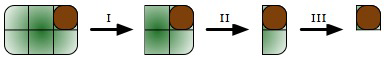

Hansel and Gretel like cakes, but especially the so called “grid cake" served in Wolfgang Puck's restaurants. It is made of mn pieces of different cakes, resembling a 2D m-by-n grid when looked at from above (hence the name).
The only thing that Hansel and Gretel do not like about grid cakes is that each of them has to contain a piece of the Scrumptious Caramel Topping cake. (Image of a three-by-four grid cake with brown Scrumptious Caramel Topping cake is shown) It turns out that the only reason Wolfgang Puck has the Scrumptious Caramel Topping cake in his recipe book is because he inherited it from his late great-great-grandmother.
Neither Hansel nor Gretel want to have the "bad" piece in their portion of the cake, so they came up with the following way to decide who gets the bad piece: first Hansel cuts a piece of the cake along the grid lines, then Gretel does the same and they keep alternating until there is only the Scrumptious Caramel Topping cake piece left and one of them is forced to take it.
For example, with a two-by-three grid cake, the illustrations below show the following steps:

A sequence of cuts to determine whether Hansel or Gretel is getting the bad piece.
Hansel and Gretel have eaten many grid cakes together and have played this game so many times that they know who will take the bad piece before starting. In fact, if they observe Hansel will take the bad piece, then Gretel knows a strategy to ensure Hansel takes the bad piece. Hansel also knows this strategy.
Given the original cake and position of the Scrumptious Caramel Topping cake piece in the grid, who will take the bad piece?
The first line of the input file contains a number t (1 ≤ t ≤ 100), the number of test cases. Then t lines follow, each containing m n r c (separated by spaces) where m and n (2 ≤ m, n ≤ 48) are the width and the length of the cake and (r,c) is the zero-based position of the Scrumptious Caramel Topping cake piece in the grid cake (0 ≤ r ≤ m-1, 0 ≤ c ≤ n-1).
For each test case print the name of the person that gets the bad piece assuming that Hansel makes the first cut and that Hansel and Gretel always cut the cake at an optimal location (trying not to get the Scrumptious Caramel Topping cake piece). Note that "cut" here refers to a straight line cut (along a grid line) that separates the cake into two pieces.
2 2 3 0 2 11 11 5 5
Gretel Hansel